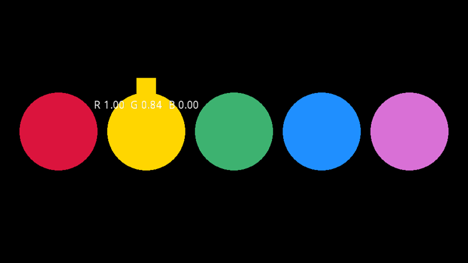

Reading pixels back (GPU to CPU)
Rendering happens on the GPU, and its results normally stay there. A surface copy stage (ISurfaceCopyStage) copies a surface's pixels back into an array your code can read. Uses include:
- pixel-perfect mouse picking (draw each object in a unique colour, read the colour under the mouse),
- saving screenshots,
- reading the results of GPU calculations (for example a custom shader or compute stage),
- testing.

Setting up
public override bool CreateResources(IServices yak)
{
_drawStage = yak.Stages.CreateDrawStage();
_overlay = yak.Stages.CreateDrawStage();
_camera = yak.Cameras.CreateCamera2D(960, 540);
_canvas = yak.Surfaces.CreateRenderTarget(960, 540);
// The callback runs once the GPU has finished rendering the frame and the pixels have been copied back
_readback = yak.Stages.CreateSurfaceCopyDataStage(960, 540, data => _pixels = data.Pixels);
return true;
}
CreateSurfaceCopyDataStage() takes:
- the size of the internal "staging" texture. Match the surface you will copy; a different size works but is recreated each time, which is slower.
- a callback, called with a TextureData once the pixels arrive. It is called on the main thread, so it can safely change your application's state.
useFloat32PixelFormat:false(the default) for normal RGBA surfaces,truefor single-channel float surfaces such as distortion height maps (then only each pixel'sXis used).
The callback can be changed later with SetSurfaceCopyDataStageCallback().
Requesting a copy
Add CopySurfaceData(stage, source) to the render queue after whatever renders the source:
public override void Rendering(IRenderQueue q, IRenderTarget windowRenderTarget)
{
q.Draw(_drawStage, _camera, _canvas);
q.CopySurfaceData(_readback, _canvas); // ask for this surface's pixels
q.Copy(_canvas, windowRenderTarget);
q.ClearDepth(windowRenderTarget);
q.Draw(_overlay, _camera, windowRenderTarget);
}
The callback fires after the GPU has finished that frame, so the data is always at least a frame old. Only request a copy when you need one; copying every frame, as this example does, costs GPU-to-CPU bandwidth.
Using the data
TextureData.Pixels holds one Vector4 per pixel (red, green, blue, alpha from 0 to 1), row by row from the top-left, the same way round as window coordinates. So pixel (x, y) is at index y * width + x:
// Pixels are stored row by row from the top-left, the same as window coordinates
if (_pixels != null)
{
var x = (int)Math.Clamp(input.MousePosition.X, 0, 959);
var y = (int)Math.Clamp(input.MousePosition.Y, 0, 539);
var pixel = _pixels[(y * 960) + x];
var mouse = transforms.ScreenFromWindow(input.MousePosition, _camera).Position;
draw.DrawString(_overlay, CoordinateSpace.Screen, $"R {pixel.X:0.00} G {pixel.Y:0.00} B {pixel.Z:0.00}",
Colour.White, 22.0f, mouse + new Vector2(0.0f, 60.0f), TextJustify.Centre, 0.5f, 0);
draw.Helpers.DrawColouredQuad(_overlay, CoordinateSpace.Screen, new Colour(pixel.X, pixel.Y, pixel.Z, 1.0f),
mouse + new Vector2(0.0f, 90.0f), 40.0f, 40.0f, 0.5f);
}
Limits
- The window cannot be copied. Render into a render target, copy that, and copy it to the window as well if you want to see it.
- Each copy stage can be used once per render queue. Create several stages to copy several surfaces in one frame.
See also
- Samples: GpuToCpu_SurfaceCopyRGBA, GpuToCpu_SurfaceCopyFloat32
- The screenshots in these docs are captured with a surface copy stage: see the capture harness.